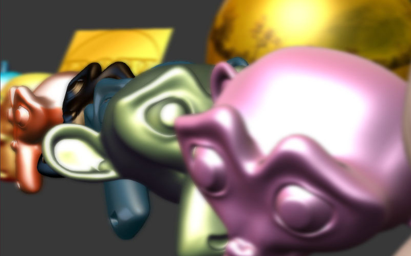

Postprocessing Effects¶
Motion Blur¶
The motion blur effect can be used to improve the realism of an interactive scene. It is displayed as picture blurring when the camera or objects move.
{kind=link}
Activation¶
Enable the Enable Motion Blur checkbox on the Scene > Blend4Web panel.
Additional settings¶
On the World > Blend4Web > Motion blur settings panel:
- Motion blur factor
Effect appearance ratio. The higher this value is the stronger is the motion blur.
- Motion blur decay threshold
Blur fade-out ratio. The higher this value is the more distinct is the effect. The default value is 0.01.
Depth of Field¶
The depth of field effect (DOF) can be used to accentuate a part of a scene. It is displayed as picture blurring nearer and further from the camera focus.
{kind=link}
Activation¶
Select an active camera and go to its settings panel (
Object Data).Then two options are available:
Select an object to use as the camera’s focus in the
Focusmenu of theDepth of Fieldpanel. In this case moving away or approaching this object will cause a corresponding correction of the camera focus.Set a non-zero value for the
Distanceon theDepth of Fieldpanel (in Blender units = meters). In this case the camera focus will be located at this distance from the camera and will move together with it.
Additional settings¶
On the Object Data > Blend4Web panel when the active camera is selected:
- DOF front distance
The distance from the focus to the nearest plane (relative to the camera) behind which full blurring occurs (in meters). The default value is 1.0.
- DOF rear distance
The distance from the focus to the furthest plane (relative to the camera) behind which full blurring occurs (in meters). The default value is 1.0.
- DOF power
Blurring ratio. The default value is 3.0.
Screen-Space Ambient Occlusion¶
The screen-space ambient occlusion (SSAO) effect can be used to fake complex light reflections from objects. The basis of this effect is that the space between close objects is less accessible for diffused light and hence is darker.

Activation¶
Enable the Enable SSAO and Render Shadows checkboxes on the Scene > Blend4Web panel.
Additional settings¶
On the World > Blend4Web > SSAO Settings panel:
- Radius Increase
The spherical sampling radius multiply factor when transfering from the internal sampling ring to the external one. The default value is 3.0.
- Use Hemisphere
Use a hemispherical sampling for shading instead of a spherical. Besides it uses different shading law.
- Use Blur Depth Test
Use edge-preserving blur to SSAO if flag will be turned on. Otherwise it uses blur which averages a 4x4 rectangle around each pixel.
- Blur Depth Test Discard Value
Influence of depth difference between samples on blur weight. It uses with
Use Blur Depth Testactivated flag. The default value is 1.0.- Influence
SSAO appearance factor. The default value is 0.7.
- Distance Factor
Factor of SSAO decay with distance. The default value is 0.0 (i.e. no decay).
- Samples
Number of samples (the more samples there are the better is the quality but the poorer is the performance). The default value is 16.
God Rays¶
The god rays effect (aka crepuscular rays) simulates well-known natural phenomenon - the shining of illuminated air parts.
{kind=link}
Activation¶
Enable the Enable God Rays checkbox on the Scene > Blend4Web panel.
Additional settings¶
On the World > Blend4Web > God Rays Settings panel:
- God Rays Intensity
The effect appearance factor. The default value is 0.7.
- Maximum Ray Length
Rays length factor. Defines the step between samples of radial blurring. The default value is 1.0.
- Steps Per Pass
Number of steps per single sample. The default value is 10.0.
Bloom¶
Bloom appears when a picture has elements with a very different brightness. A glowing halo is created around the bright details.

Activation¶
Enable the Enable Bloom checkbox on the Scene > Blend4Web panel.
Additional settings¶
On the World > Blend4Web > Bloom Settings panel:
- Key
Bloom intensity.
- Blur
Bloom blurriness factor.
- Edge Luminance
The boundary value of an element’s relative brightness above which the bloom effect appears.
Outlining¶
As a result of the outline glow effect, a luminous colored halo will be displayed around the object.

Activation¶
The outlining is activated programmatically via API. Different animation models can be applied such as constant glow, fading out glow, pulsatory glow and any other. In order to enable the outlining effect on a certain object, make sure that the Scene > Blend4Web panel’s Enable Object Outlining property is set to ON or AUTO.
Additional settings¶
On the Object > Blend4Web panel:
- Enable Outlining
Permit using the outline glow effect on this object.
- Outline Duration
Duration of glow animation, seconds. The default value is 1.
- Outline Period
Repeat period of glow animation, seconds. The default value is 1.
- Outline Relapses
The number of iterations of glow animation. If zero, animation is repeated forever. The default value is 0.
- Outline on Select
Activate glow animation upon selecting the object. In this case the
Selectableoption must be enabled. In case of a user-defined glow animation model, this option must be disabled in order to avoid conflict.
On the World > Blend4Web panel:
- Objects Outline Сolor
Global glow color used for all objects. The default value is (1,1,1), i.e. white.
- Outline Factor
When this parameter decreases so does the thickness and the brightness of the halo around the object. The default value is 1.
The World > Blend4Web settings are taken as default when the glow effect is initiated via API.
Stereoscopic Rendering (Anaglyph)¶

Activation¶
The stereoscopic rendering mode is intended for viewing the content using special glasses. It is activated by an application via API.
Additional settings¶
No.
Color Correction¶

Activation¶
Enable the Enable Color Correction checkbox on the Scene > Blend4Web panel.
Additional settings¶
On the World > Blend4Web > Color Correction Settings panel:
- Brightness
The default value is 0.0.
- Contrast
The default value is 0.0.
- Exposure
The default value is 1.0.
- Saturation
The default value is 1.0.
Anti-Aliasing¶
Anti-aliasing is used to reduce undesirable rendering artefacts (poor pixelization).

Activation¶
Enable the Enable Antialiasing on the Scene > Blend4Web panel.
Additional settings¶
The anti-aliasing method is assigned simultaneously with the selection of the engine performance profile.
low quality - anti-aliasing is disabled
high quality - the anti-aliasing method is FXAA (Fast Approximate Anti-Aliasing) by Nvidia
maximum quality - the anti-aliasing method is SMAA (Enhanced Subpixel Morphological Anti-Aliasing) by Crytek
Glow¶
Effect of halo which is observed around emissive objects due to light scattering in the atmosphere and inside the human eye.

Activation¶
Add a B4W_GLOW_OUTPUT node to a node material. The Enable Glow Materials option on the Scene > Blend4Web panel should be set to ON or AUTO.
Additional settings¶
On the World > Blend4Web, in the Glow Settings section:
- Render Glow Materials Over Blend
Render the glow effect over transparent objects.
- Small Glow Mask Intensity
Intensity of glow obtained through the smaller mask. The default value is 2.0.
- Large Glow Mask Intensity
Intensity of glow obtained through the larger mask. The default value is 2.0.
- Small Glow Mask Width
Width of glow obtained through the smaller mask. The default value is 2.0.
- Large Glow Mask Width
Width of glow obtained through the larger mask. The default value is 6.0.